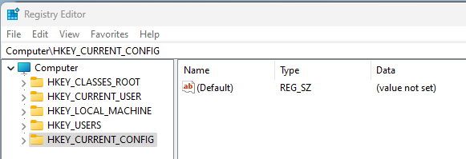

Windows Registry#
The registry is where the current configuration of the Windows OS is kept. To view the registry, open regedit from the command prompt (or powershell). From here we can see the hives

Hives#
The ‘hives’ are where data is kept in the registry. Each has a specific purpose and is normally referred to by it’s abbreviation. Each hive is stored in separate, hidden & protected files -> you cant open these directly from the OS except for via internal OS calls (such as those used by the registry editor). You can’t copy them either. They also don’t normally have file extensions (NTUSER and USRCLASS are the exceptions as .dat files).
Various DFIR tools can extract the files from disk in both live and offline modes using wizardry, which we’ll get to later.
Changes to the hives (transaction logs which have not yet been written to the live files) are kept in the same directories as .LOG files. Multiple files are sequential i.e. .LOG1,.LOG2,.LOG3 etc etc
Hive Key Current User (HKCU)#
When a user logs in (or is switched to), their NTUSER.dat file is loaded to the registry here.
A user’s NTUSER.dat file is kept in C:\Users\[username]\
The subkey HKCU/software/classes is kept in C:\Users\[username]\AppData\Local\Microsoft\Windows\USRCLASS.dat
Hive Key Users (HKU)#
This is the hive where all users are stored
There is also a ‘default’ user kept.
The default user’s file is in C:\Windows\System32\Config\DEFAULT
Hive Key Local Machine (HKLM)#
These are the settings of the computer, and is also used for a ‘default’ setting for users. The subkeys of HKLM are stored in separate files
SAM (HKLM/SAM) -> C:\Windows\System32\Config\SAM
Security (HKLM/Security) -> C:\Windows\System32\Config\SECURITY
Software (HKLM/Software) -> C:\Windows\System32\Config\SOFTWARE
System (HKLM/System) -> C:\Windows\System32\Config\SYSTEM.
Hive Key Classes Root (HKCR)#
HKCR is a subkey of HKLM/software. This hive defines what file types launch which programs (such as a .txt opening in notepad). It is a merge of two other keys in order to find the ‘superseding’ value. These keys are:
HKLM/software/classes
HKCU/software/classes
As above, HKLM is the ‘default’ value, where HKCU can override this. Therefore if a value exists in both, HKCU will take precedence. In a similar vein, if you write to HKCR, it will write to HKCU if it exists, otherwise it will write to HKLM.
Hive Key Current Config (HKCC)#
This is where the current hardware profile of the device is kept.
AMCache#
The AMCache isn’t displayed in the registry editor but it is stored as a .hve file. The AMcache stores recently run programs, making it a great location for DFIR.
The AMCache is in C:\Windows\AppCompat\programs\amcache.hve
Wizard Tools - Registry Extraction#
As mentioned in the last section, you can’t just copy or open the registry hives without special tools. In a live system that tool is regedit, but what are you going to do if you only have a disk image? You also can’t just go logging in to a suspicious machine as you may overwrite or modify key artifacts. So what is an investigator to do?
AccessData Registry Viewer (FTK)#
This one is a bit of a red herring - Access data doesnt exit any more. They appear to have been brought out by Exterro and have rebranded to FTK and don’t have a free option any more… Booo.
Not the end of the world, they were quite limited anyways. They can be found here: https://www.exterro.com/
Can only view one hive at a time (offline)
Can’t bring in transaction logs
Full disclosure, I haven’t dived into this one yet, it’s perfectly possible that FTK has more features.
Zimmerman’s Registry Explorer#
(Eric) Zimmerman will come up quite a bit in our DFIR journey, he’s the OG wizard for this sorta stuff. You can find his tools here: https://ericzimmerman.github.io/#!index.md
Registry Explorer has all the features we would expect
Load multiple hives at once
Load Transaction logs and reconcile against the loaded hive
RegRipper#
I love the ‘Ripper’ name, goes back to the ‘warez’ days for me. Anyways, Regripper doesnt extract from the registry but it can build a report from a loaded hive. It can’t however load transaction logs so must be used after other tools cough Registry Explorer cough.
Interesting Locations#
This section simply lists where to find some interesting data to help with an investigation. There’s far more to it but I use it as a quick reference check; it’s also great for getting a bit of background on your device
OS Details#
OS Version -> HKLM/Software/Microsoft/WindowsNT/CurrentVersion
Computer Name -> HKLM/System/CurrentControlSet/Control/ComputerName/ComputerName
Time Zone -> HKLM/System/CurrentControlSet/Control/TimeZoneInformation
Control Sets#
Note: The “Active Control Sets” supersedes the below, it’s the actual setting (not just default as below)
Volatile Control Set -> HKLM/System/CurrentControlSet
Active Control Sets -> HKLM/System/Select
Booted Control Set -> HKLM/System/ControlSet001
Last known Good Set -> HKLM/System/ControlSet002
Network#
I’m still not sure what Managed vs unmanaged signatures are. Best I can tell is that ‘Managed’ are provided by a DNS server where ‘Unmanaged’ are wireless networks or uncontrolled ‘wired’ connections. Would love to know the answer if anyone knows….
Interfaces -> HKLM/System/CurrentControlSet/Services/TCPIP/Paramaters/Interfaces
Past Networks -> HKLM/Software/Microsoft/WindowsNT/CurrentVersion/NetworkList/Signatures/managed or unmanaged
User Autostart#
As above when the hives were mentioned, HKCU can override HKLM. The first two below are in both hives (at the same location) where HKCU will supersede HKLM.
Every Login -> HIVE/Software/Microsoft/Windows/CurrentVersion/Run
Once off -> HIVE/Software/Microsoft/Windows/CurrentVersion/RunOnce
HKLM/software/Microsoft/Windows/CurrentVersion/Policies/Explorer/run
Services#
If a service ‘start’ is 0x02 then it is autostart on boot.
Registered Services -> HKLM/System/CurrentControlSet/Services/
User Info (Users List)#
HKLM/SAM/Domains/Accounts/Users
Recent files#
These are the files recently accessed by the user account. It only includes those accessed by ‘explorer’ and stores the name in hex (open the binary string to see it decoded, or use your tool of choice)
HKCU/Software/Microsoft/Windows/CurrentVersion/Explorer/RecentDocs
There is also .[ext] subkeys for each extension
MS office keeps it’s own ‘recent files too
HKCU/Software/Microsoft/Office/[version]/[application]/
If looking for Office365, this is in \userMRU\LiveID_####\FileMRU
Open/Save Dialogue Box History#
This is one that I didnt think of until I heard about it. This is where the OS stores the location for the ‘default’ window when you try to save a new file (or open a new file). There are plenty of subkeys here (including specific file extensions under /OpenSavePidMRU/).
HKCU/Software/Microsoft/Windows/CurrentVersion/Explorer/ComDlg
Explorer Searches#
This is the search history from the ‘search’ bar in explorer.
HKCU/Software/Microsoft/Windows/CurrentVersion/Explorer/TypedPaths
HKCU/Software/Microsoft/Windows/CurrentVersion/Explorer/WordWheelQuery
Shellbags#
Shellbacks aren’t ‘readable’ in the registry, you’ll need to use one of Zimmerman’s tools to inspect these -> ShellBag Explorer
HKCU/Software/Classes/Local Settings/Software/Microsoft/Windows/Shell/Bags/
HKCU/Software/Classes/Local Settings/Software/Microsoft/Windows/Shell/Bags/BagMRU
HKCU/Software/Microsoft/Windows/Shell/Bags
HKCU/Software/Microsoft/Windows/Shell/BagMRU
Evidence of Execution#
While we have gone through what the registry is, and some interesting locations to investigate, these are only guides more than actual evidence. This chapter focuses on those areas where we can prove something happened. Think of the previous section as “someone looking around” and this one as “someone doing something”.
User Assist#
This is an interesting one, where the OS keeps a record of the .exe files run, how many times they have been run & the ‘focus time’. The data is stored against a GUID and encoded (ROT13, surprised about that one). This is also only those run from the Explorer GUI, nothing from cmd or powershell here.
HKCU/Software/Microsoft/Windows/CurrentVersion/Explorer/UserAssist/[UserGuid]/count
Application Compatibility Cache (AppCompatCache)#
The AppCompatCache isnt readable directly in the registry and will need to be parsed. Again, we’re looking for at Zimmerman’s help on this one -> AppCmpatCacheParser. To extract
AppCompatCacheParser.exe –csv [outputfile] -f [hiveFile] -c [ControlSet]
You can then view the .csv output in EZviewer
The Hive is HKLM, full path below
HKLM/System/CurrentControlSet/Control/Session Manager/AppCompatCache/
AMcache#
As we’ve been through already, the AMcache is a hive but it isn’t in RegEdit. It stores the last execututed programs and it is kept in
C:\Windows\AppCompat\Programs\AMcache.hve
In the hive, you can find the recent executions in
root/file/[VolumeGUID]/
Background Activity Moderator and Desktop Activity Moderator (BAM & DAM)#
Both of these files store the same information, they are recently executed files in the background (BAM) and Desktop (DAM). Theres more to it than this though. The BAM is as above, where it monitors the launched applications at boot. The DAM on the other hand is designed to manage the battery usage by applications that use ‘Connected Standby’ on mobile & tablet devices. Desktops won’t be populated.
BAM -> HKLM/System/CurrentControlSet/Services/bam/State/UserSettings/[UserGUID]/
DAM -> HKLM/System/CurrentControlSet/Services/dam/State/UserSettings/[UserGUID]/
External Devices / USB#
Not evidence of execution as such, but evidence of device connection. USBs are a common way to bypass controls for file transfer, so connected devices are always a good source of information.
To identify devices
HKLM/System/CurrentControlSet/Enum/USB
HKLM/System/CurrentControlSet/Enum/USBSTOR
To find the ‘Friendly Name’ of the device (the device Label) match the “Identification” (USBSTOR) to the “Friendly Name” in
HKLM/Software/Microsoft/Windows Portable Devices/Devices
To find when the USB was connected to the device, see the below location. Note that the ‘Properties’ key is locked in a live OS so you can’t see it in Registry Editor.
HKLM/System/CurrentControlSet/Enum/USBSTOR/Ven_[ModelProdVersion]/[USBserial]/properties/{[83_XXXXXX]}/NNNN
NNNN = 0064 -> First Connection
NNNN = 0066 -> Last Connection
NNNN = 0067 -> Last Disconnect
The 83_XXX is specific to the hardware.